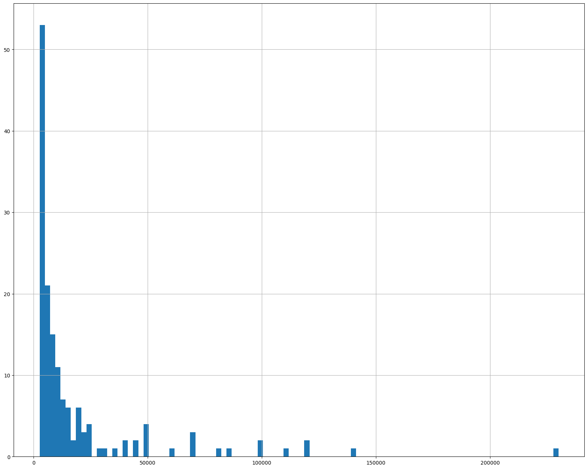
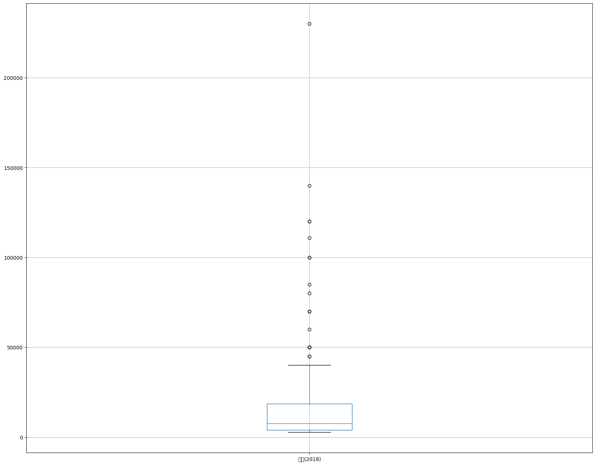
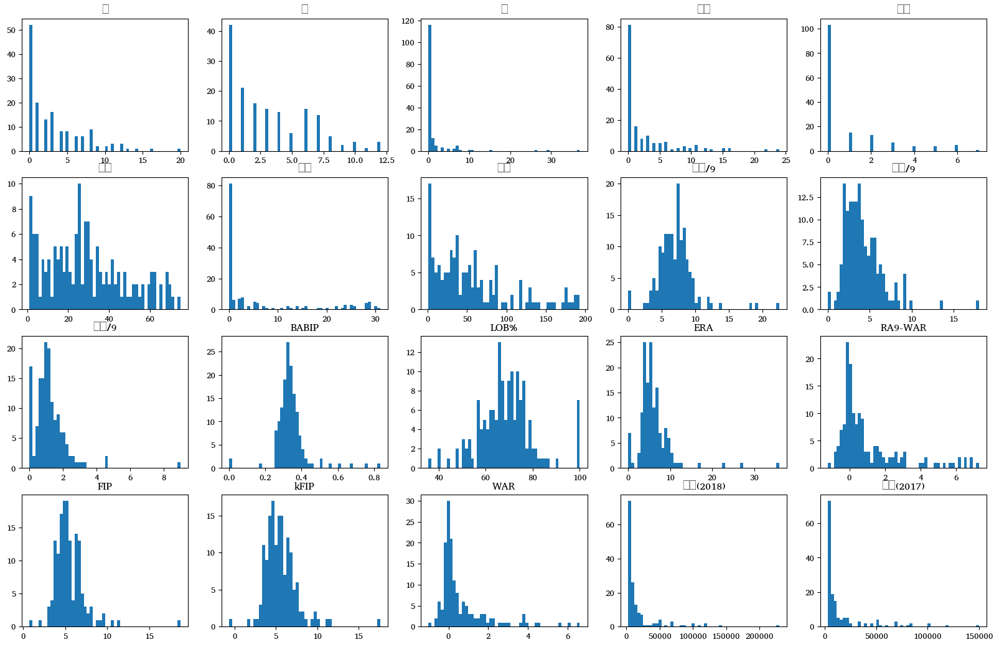
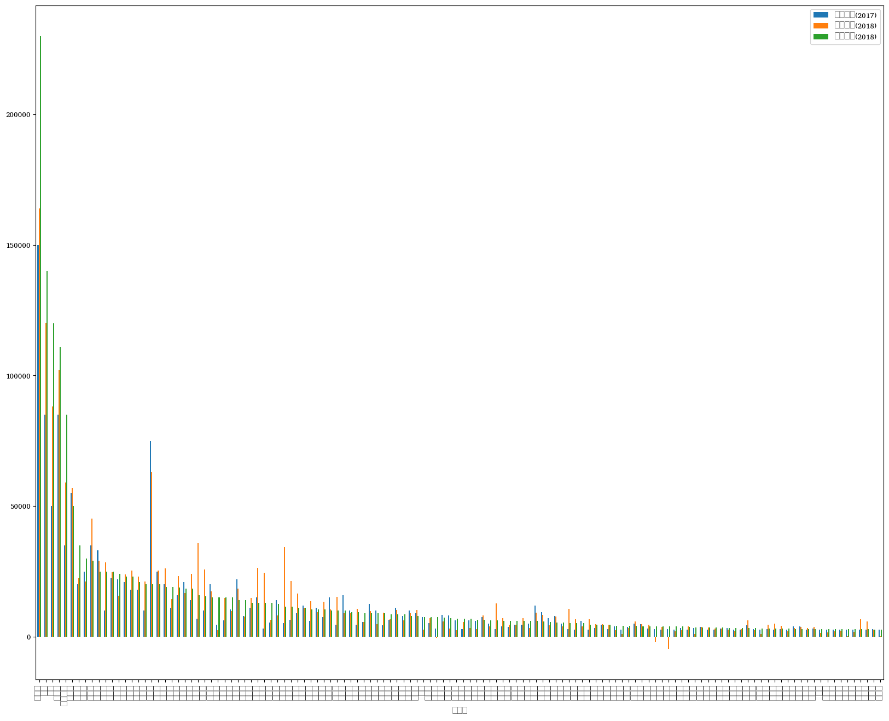

import pandas as pd
import numpy as np
import matplotlib.pyplot as plt미래 예측 데이터 분석(프로야구 선수의 다음 해 연봉 예측)
회귀 분석
ref
import matplotlib as mpldataset
picher = 'picher_stats_2017.csv'batter = 'batter_stats_2017.csv'picher= pd.read_csv(picher)
batter= pd.read_csv(batter)picher.columnsIndex(['선수명', '팀명', '승', '패', '세', '홀드', '블론', '경기', '선발', '이닝', '삼진/9',
'볼넷/9', '홈런/9', 'BABIP', 'LOB%', 'ERA', 'RA9-WAR', 'FIP', 'kFIP', 'WAR',
'연봉(2018)', '연봉(2017)'],
dtype='object')batter.columnsIndex(['선수명', '팀명', '경기', '타석', '타수', '안타', '홈런', '득점', '타점', '볼넷', '삼진', '도루',
'BABIP', '타율', '출루율', '장타율', 'OPS', 'wOBA', 'WAR', '연봉(2018)',
'연봉(2017)'],
dtype='object')print(picher.shape)
print(batter.shape)(152, 22)
(191, 21)picher['연봉(2018)'].describe()count 152.000000
mean 18932.236842
std 30940.732924
min 2700.000000
25% 4000.000000
50% 7550.000000
75% 18500.000000
max 230000.000000
Name: 연봉(2018), dtype: float64picher['연봉(2017)'].describe()count 152.000000
mean 16505.263158
std 25046.478092
min 2700.000000
25% 3000.000000
50% 6000.000000
75% 15250.000000
max 150000.000000
Name: 연봉(2017), dtype: float64picher['WAR'].describe()count 152.000000
mean 0.665921
std 1.322205
min -1.010000
25% -0.060000
50% 0.130000
75% 0.930000
max 6.620000
Name: WAR, dtype: float64picher['연봉(2018)'].hist(bins=100)<Axes: >
picher.boxplot(column=['연봉(2018)']);/home/coco/anaconda3/envs/py38/lib/python3.8/site-packages/IPython/core/events.py:89: UserWarning: Glyph 50672 (\N{HANGUL SYLLABLE YEON}) missing from current font.
func(*args, **kwargs)
/home/coco/anaconda3/envs/py38/lib/python3.8/site-packages/IPython/core/events.py:89: UserWarning: Glyph 48393 (\N{HANGUL SYLLABLE BONG}) missing from current font.
func(*args, **kwargs)
/home/coco/anaconda3/envs/py38/lib/python3.8/site-packages/IPython/core/pylabtools.py:152: UserWarning: Glyph 50672 (\N{HANGUL SYLLABLE YEON}) missing from current font.
fig.canvas.print_figure(bytes_io, **kw)
/home/coco/anaconda3/envs/py38/lib/python3.8/site-packages/IPython/core/pylabtools.py:152: UserWarning: Glyph 48393 (\N{HANGUL SYLLABLE BONG}) missing from current font.
fig.canvas.print_figure(bytes_io, **kw)
picher_features_df = picher[['승', '패', '세', '홀드', '블론', '경기', '선발', '이닝', '삼진/9',
'볼넷/9', '홈런/9', 'BABIP', 'LOB%', 'ERA', 'RA9-WAR', 'FIP', 'kFIP', 'WAR',
'연봉(2018)', '연봉(2017)']]# ctrl(cmd) + / : 주석처리를 풀었다 했다
import matplotlib.pyplot as plt
# window의 한글 폰트 설정
plt.rc('font',family='Abyssinica SIL') #윈도우의 경우
# plt.rc('font', family='AppleGothic') #맥의 경우
plt.rc('axes', unicode_minus=False) #마이너스 폰트 깨지는 것 대비
# 그래프가 노트북 안에 보이게 하기 위해
%matplotlib inlinedef plot_hist_each_column(df):
plt.rcParams['figure.figsize']=[20,16]
fig=plt.figure(1)
for i in range(len(df.columns)):
ax = fig.add_subplot(5,5,i+1)
plt.hist(df[df.columns[i]], bins=50)
ax.set_title(df.columns[i])
plt.show()
plot_hist_each_column(picher_features_df);
- 피처의 정규화 실시
피처 스케일링
pd.options.mode.chained_assignment=None- float모양으로 출력
def standard_scaling(df, scale_columns):
for col in scale_columns:
series_mean = df[col].mean()
series_std = df[col].std()
df[col] = df[col].apply(lambda x: (x-series_mean)/series_std)
return dfscale_columns = [ '승', '패', '세', '홀드', '블론', '경기', '선발', '이닝', '삼진/9',
'볼넷/9', '홈런/9', 'BABIP', 'LOB%', 'ERA', 'RA9-WAR', 'FIP', 'kFIP', 'WAR',
'연봉(2018)', '연봉(2017)']
picher_df = standard_scaling(picher, scale_columns)
picher_df = picher_df.rename(columns={'연봉(2018)':'y'})
picher_df.head()| 선수명 | 팀명 | 승 | 패 | 세 | 홀드 | 블론 | 경기 | 선발 | 이닝 | ... | 홈런/9 | BABIP | LOB% | ERA | RA9-WAR | FIP | kFIP | WAR | y | 연봉(2017) | |
|---|---|---|---|---|---|---|---|---|---|---|---|---|---|---|---|---|---|---|---|---|---|
| 0 | 켈리 | SK | 3.313623 | 7 | 0 | 0 | 0 | 30 | 30 | 190.0 | ... | 0.76 | 0.342 | 73.7 | 3.60 | 6.91 | 3.69 | 3.44 | 6.62 | 140000 | 85000 |
| 1 | 소사 | LG | 2.019505 | 11 | 1 | 0 | 0 | 30 | 29 | 185.1 | ... | 0.53 | 0.319 | 67.1 | 3.88 | 6.80 | 3.52 | 3.41 | 6.08 | 120000 | 50000 |
| 2 | 양현종 | KIA | 4.348918 | 6 | 0 | 0 | 0 | 31 | 31 | 193.1 | ... | 0.79 | 0.332 | 72.1 | 3.44 | 6.54 | 3.94 | 3.82 | 5.64 | 230000 | 150000 |
| 3 | 차우찬 | LG | 1.760682 | 7 | 0 | 0 | 0 | 28 | 28 | 175.2 | ... | 1.02 | 0.298 | 75.0 | 3.43 | 6.11 | 4.20 | 4.03 | 4.63 | 100000 | 100000 |
| 4 | 레일리 | 롯데 | 2.537153 | 7 | 0 | 0 | 0 | 30 | 30 | 187.1 | ... | 0.91 | 0.323 | 74.1 | 3.80 | 6.13 | 4.36 | 4.31 | 4.38 | 111000 | 85000 |
5 rows × 22 columns
- 범주형은 원핫 인코딩
team_encoding = pd.get_dummies(picher_df['팀명'])
picher_df = picher_df.drop('팀명', axis=1)
picher_df = picher_df.join(team_encoding)team_encoding.head()| KIA | KT | LG | NC | SK | 두산 | 롯데 | 삼성 | 한화 | |
|---|---|---|---|---|---|---|---|---|---|
| 0 | 0 | 0 | 0 | 0 | 1 | 0 | 0 | 0 | 0 |
| 1 | 0 | 0 | 1 | 0 | 0 | 0 | 0 | 0 | 0 |
| 2 | 1 | 0 | 0 | 0 | 0 | 0 | 0 | 0 | 0 |
| 3 | 0 | 0 | 1 | 0 | 0 | 0 | 0 | 0 | 0 |
| 4 | 0 | 0 | 0 | 0 | 0 | 0 | 1 | 0 | 0 |
picher_df.head()| 선수명 | 승 | 패 | 세 | 홀드 | 블론 | 경기 | 선발 | 이닝 | 삼진/9 | ... | 연봉(2017) | KIA | KT | LG | NC | SK | 두산 | 롯데 | 삼성 | 한화 | |
|---|---|---|---|---|---|---|---|---|---|---|---|---|---|---|---|---|---|---|---|---|---|
| 0 | 켈리 | 3.313623 | 7 | 0 | 0 | 0 | 30 | 30 | 190.0 | 8.95 | ... | 85000 | 0 | 0 | 0 | 0 | 1 | 0 | 0 | 0 | 0 |
| 1 | 소사 | 2.019505 | 11 | 1 | 0 | 0 | 30 | 29 | 185.1 | 7.43 | ... | 50000 | 0 | 0 | 1 | 0 | 0 | 0 | 0 | 0 | 0 |
| 2 | 양현종 | 4.348918 | 6 | 0 | 0 | 0 | 31 | 31 | 193.1 | 7.36 | ... | 150000 | 1 | 0 | 0 | 0 | 0 | 0 | 0 | 0 | 0 |
| 3 | 차우찬 | 1.760682 | 7 | 0 | 0 | 0 | 28 | 28 | 175.2 | 8.04 | ... | 100000 | 0 | 0 | 1 | 0 | 0 | 0 | 0 | 0 | 0 |
| 4 | 레일리 | 2.537153 | 7 | 0 | 0 | 0 | 30 | 30 | 187.1 | 7.49 | ... | 85000 | 0 | 0 | 0 | 0 | 0 | 0 | 1 | 0 | 0 |
5 rows × 30 columns
분석
데이터 분리
from sklearn import linear_model
from sklearn.model_selection import train_test_split
from sklearn.metrics import mean_squared_error
from math import sqrtX=picher_df[picher_df.columns.difference(['선수명','y'])]
y=picher_df['y']X_train, X_test, y_train, y_test = train_test_split(X,y, test_size=0.2, random_state=19)lrnr
lr = linear_model.LinearRegression()fit
model = lr.fit(X_train, y_train)print(lr.coef_)[-1.66433649e+04 -1.00005486e+02 -5.03120671e+04 -1.56086205e+03
1.57200472e+03 -7.47049524e+02 -1.18666920e+02 -5.23546876e+02
2.14736071e+03 8.98376390e+02 7.76920737e+03 3.91969663e+04
-1.25668595e+02 -8.92118013e+02 4.49911172e+02 3.22164149e+03
7.77935715e+02 -2.81055645e+03 1.90870829e+03 -4.92026373e+02
-5.21324705e+01 2.36025301e+02 7.63803603e-01 1.69794484e+01
4.15729514e+02 3.61384063e+03 -2.07081858e+02 1.78400390e+04]- 학습된 계수
evaluate
import statsmodels.api as smX_train = sm.add_constant(X_train) # X_train데이터에 상수열 추가
model = sm.OLS(y_train, X_train).fit()
model.summary()| Dep. Variable: | y | R-squared: | 0.928 |
| Model: | OLS | Adj. R-squared: | 0.907 |
| Method: | Least Squares | F-statistic: | 44.19 |
| Date: | Thu, 18 May 2023 | Prob (F-statistic): | 7.70e-42 |
| Time: | 13:58:48 | Log-Likelihood: | -1247.8 |
| No. Observations: | 121 | AIC: | 2552. |
| Df Residuals: | 93 | BIC: | 2630. |
| Df Model: | 27 | ||
| Covariance Type: | nonrobust |
OLS Regression Results
| coef | std err | t | P>|t| | [0.025 | 0.975] | |
| const | 2.591e+04 | 2.08e+04 | 1.246 | 0.216 | -1.54e+04 | 6.72e+04 |
| BABIP | -1.664e+04 | 1.45e+04 | -1.145 | 0.255 | -4.55e+04 | 1.22e+04 |
| ERA | -100.0055 | 557.379 | -0.179 | 0.858 | -1206.850 | 1006.839 |
| FIP | -5.031e+04 | 5.04e+04 | -0.998 | 0.321 | -1.5e+05 | 4.98e+04 |
| KIA | 1317.9412 | 2954.415 | 0.446 | 0.657 | -4548.941 | 7184.823 |
| KT | 4450.8079 | 3178.624 | 1.400 | 0.165 | -1861.310 | 1.08e+04 |
| LG | 2131.7537 | 2842.243 | 0.750 | 0.455 | -3512.378 | 7775.885 |
| LOB% | -118.6669 | 134.995 | -0.879 | 0.382 | -386.740 | 149.406 |
| NC | 2355.2563 | 3713.995 | 0.634 | 0.528 | -5020.002 | 9730.514 |
| RA9-WAR | 2147.3607 | 1589.996 | 1.351 | 0.180 | -1010.055 | 5304.777 |
| SK | 3777.1796 | 2799.284 | 1.349 | 0.181 | -1781.644 | 9336.004 |
| WAR | 7769.2074 | 1915.216 | 4.057 | 0.000 | 3965.967 | 1.16e+04 |
| kFIP | 3.92e+04 | 4.01e+04 | 0.977 | 0.331 | -4.05e+04 | 1.19e+05 |
| 경기 | -125.6686 | 152.468 | -0.824 | 0.412 | -428.439 | 177.102 |
| 두산 | 1986.6852 | 3665.539 | 0.542 | 0.589 | -5292.349 | 9265.719 |
| 롯데 | 3328.7144 | 3332.488 | 0.999 | 0.320 | -3288.946 | 9946.374 |
| 볼넷/9 | 3221.6415 | 2655.869 | 1.213 | 0.228 | -2052.388 | 8495.671 |
| 블론 | 777.9357 | 760.237 | 1.023 | 0.309 | -731.745 | 2287.616 |
| 삼성 | 68.2468 | 3734.016 | 0.018 | 0.985 | -7346.768 | 7483.262 |
| 삼진/9 | 1908.7083 | 2576.865 | 0.741 | 0.461 | -3208.435 | 7025.852 |
| 선발 | -492.0264 | 563.005 | -0.874 | 0.384 | -1610.043 | 625.990 |
| 세 | -52.1325 | 269.373 | -0.194 | 0.847 | -587.054 | 482.789 |
| 승 | 236.0253 | 2215.264 | 0.107 | 0.915 | -4163.049 | 4635.100 |
| 연봉(2017) | 0.7638 | 0.051 | 15.055 | 0.000 | 0.663 | 0.865 |
| 이닝 | 16.9794 | 131.695 | 0.129 | 0.898 | -244.540 | 278.499 |
| 패 | 415.7295 | 618.326 | 0.672 | 0.503 | -812.143 | 1643.602 |
| 한화 | 6492.6438 | 3541.464 | 1.833 | 0.070 | -540.002 | 1.35e+04 |
| 홀드 | -207.0819 | 362.736 | -0.571 | 0.569 | -927.403 | 513.239 |
| 홈런/9 | 1.784e+04 | 1.65e+04 | 1.082 | 0.282 | -1.49e+04 | 5.06e+04 |
| Omnibus: | 28.069 | Durbin-Watson: | 2.025 |
| Prob(Omnibus): | 0.000 | Jarque-Bera (JB): | 194.274 |
| Skew: | -0.405 | Prob(JB): | 6.52e-43 |
| Kurtosis: | 9.155 | Cond. No. | 2.39e+15 |
Notes:
[1] Standard Errors assume that the covariance matrix of the errors is correctly specified.
[2] The smallest eigenvalue is 1.72e-20. This might indicate that there are
strong multicollinearity problems or that the design matrix is singular.
OLS: Ordinary Least Squares방법을 사용한 회귀 모델 정의 작업pvalue가 0.05미만인 데이터:
WAR,연봉(2017),한화
coef 시각화
- 회귀 계수 리스트 반환
coefs = model.params.tolist()coefs_series= pd.Series(coefs)- 변수명 리스트 반환
x_labels=model.params.index.tolist()- 회귀 계수 출력
ax=coefs_series.plot(kind='bar');
ax.set_title('feature_coef_graph')
ax.set_xlabel('x_features')
ax.set_ylabel('coef')
ax.set_xticklabels(x_labels)[Text(0, 0, 'const'),
Text(1, 0, 'BABIP'),
Text(2, 0, 'ERA'),
Text(3, 0, 'FIP'),
Text(4, 0, 'KIA'),
Text(5, 0, 'KT'),
Text(6, 0, 'LG'),
Text(7, 0, 'LOB%'),
Text(8, 0, 'NC'),
Text(9, 0, 'RA9-WAR'),
Text(10, 0, 'SK'),
Text(11, 0, 'WAR'),
Text(12, 0, 'kFIP'),
Text(13, 0, '경기'),
Text(14, 0, '두산'),
Text(15, 0, '롯데'),
Text(16, 0, '볼넷/9'),
Text(17, 0, '블론'),
Text(18, 0, '삼성'),
Text(19, 0, '삼진/9'),
Text(20, 0, '선발'),
Text(21, 0, '세'),
Text(22, 0, '승'),
Text(23, 0, '연봉(2017)'),
Text(24, 0, '이닝'),
Text(25, 0, '패'),
Text(26, 0, '한화'),
Text(27, 0, '홀드'),
Text(28, 0, '홈런/9')]/home/coco/anaconda3/envs/py38/lib/python3.8/site-packages/IPython/core/events.py:89: UserWarning: Glyph 46160 (\N{HANGUL SYLLABLE DU}) missing from current font.
func(*args, **kwargs)
/home/coco/anaconda3/envs/py38/lib/python3.8/site-packages/IPython/core/events.py:89: UserWarning: Glyph 47215 (\N{HANGUL SYLLABLE ROS}) missing from current font.
func(*args, **kwargs)
/home/coco/anaconda3/envs/py38/lib/python3.8/site-packages/IPython/core/events.py:89: UserWarning: Glyph 45936 (\N{HANGUL SYLLABLE DE}) missing from current font.
func(*args, **kwargs)
/home/coco/anaconda3/envs/py38/lib/python3.8/site-packages/IPython/core/events.py:89: UserWarning: Glyph 48380 (\N{HANGUL SYLLABLE BOL}) missing from current font.
func(*args, **kwargs)
/home/coco/anaconda3/envs/py38/lib/python3.8/site-packages/IPython/core/events.py:89: UserWarning: Glyph 45367 (\N{HANGUL SYLLABLE NES}) missing from current font.
func(*args, **kwargs)
/home/coco/anaconda3/envs/py38/lib/python3.8/site-packages/IPython/core/events.py:89: UserWarning: Glyph 48660 (\N{HANGUL SYLLABLE BEUL}) missing from current font.
func(*args, **kwargs)
/home/coco/anaconda3/envs/py38/lib/python3.8/site-packages/IPython/core/events.py:89: UserWarning: Glyph 47200 (\N{HANGUL SYLLABLE RON}) missing from current font.
func(*args, **kwargs)
/home/coco/anaconda3/envs/py38/lib/python3.8/site-packages/IPython/core/events.py:89: UserWarning: Glyph 48156 (\N{HANGUL SYLLABLE BAL}) missing from current font.
func(*args, **kwargs)
/home/coco/anaconda3/envs/py38/lib/python3.8/site-packages/IPython/core/events.py:89: UserWarning: Glyph 45789 (\N{HANGUL SYLLABLE NING}) missing from current font.
func(*args, **kwargs)
/home/coco/anaconda3/envs/py38/lib/python3.8/site-packages/IPython/core/events.py:89: UserWarning: Glyph 54056 (\N{HANGUL SYLLABLE PAE}) missing from current font.
func(*args, **kwargs)
/home/coco/anaconda3/envs/py38/lib/python3.8/site-packages/IPython/core/events.py:89: UserWarning: Glyph 54848 (\N{HANGUL SYLLABLE HOL}) missing from current font.
func(*args, **kwargs)
/home/coco/anaconda3/envs/py38/lib/python3.8/site-packages/IPython/core/events.py:89: UserWarning: Glyph 54856 (\N{HANGUL SYLLABLE HOM}) missing from current font.
func(*args, **kwargs)
/home/coco/anaconda3/envs/py38/lib/python3.8/site-packages/IPython/core/events.py:89: UserWarning: Glyph 47088 (\N{HANGUL SYLLABLE REON}) missing from current font.
func(*args, **kwargs)
/home/coco/anaconda3/envs/py38/lib/python3.8/site-packages/IPython/core/pylabtools.py:152: UserWarning: Glyph 46160 (\N{HANGUL SYLLABLE DU}) missing from current font.
fig.canvas.print_figure(bytes_io, **kw)
/home/coco/anaconda3/envs/py38/lib/python3.8/site-packages/IPython/core/pylabtools.py:152: UserWarning: Glyph 47215 (\N{HANGUL SYLLABLE ROS}) missing from current font.
fig.canvas.print_figure(bytes_io, **kw)
/home/coco/anaconda3/envs/py38/lib/python3.8/site-packages/IPython/core/pylabtools.py:152: UserWarning: Glyph 45936 (\N{HANGUL SYLLABLE DE}) missing from current font.
fig.canvas.print_figure(bytes_io, **kw)
결과 정리
| 피처명 | 유의미한 피처 | 영향력이 큰 피처 |
|---|---|---|
| FIP | X | O |
| WAR | O | O |
| 홈런 | X | O |
| 작년 연봉 | O | O |
| 팀(한화) | O | \(\Delta\) |
\(R^2\) SCORE
X = picher_df[picher_df.columns.difference(['선수명','y'])]
y = picher_df['y']
X_trian, X_test, y_train, y_test = train_test_split(X,y,test_size=0.2,random_state=19)lr= linear_model.LinearRegression()
model=lr.fit(X_train, y_train)
print(model.score(X_train, y_train))
0.9129870505440939X_test = sm.add_constant(X_test)print(model.score(X_test, y_test))0.87323834388485이ㅏ거 왜 안대
RMSE score
y_predictions = lr.predict(X_train)
print(sqrt(mean_squared_error(y_train, y_predictions)))7989.160309407914y_predictions = lr.predict(X_test)
print(sqrt(mean_squared_error(y_test,y_predictions)))15091.589840279374상관관계
corr = picher_df[scale_columns].corr(method='pearson')
show_cols = ['win', 'lose', 'save', 'hold', 'blon', 'match', 'start',
'inning', 'strike3', 'ball4', 'homerun', 'BABIP', 'LOB',
'ERA', 'RA9-WAR', 'FIP', 'kFIP', 'WAR', '2017']
# corr 행렬 히트맵을 시각화합니다.
plt.rc('font', family='NanumGothicOTF')
sns.set(font_scale=1.5)
hm = sns.heatmap(corr.values,
cbar=True,
annot=True,
square=True,
fmt='.2f',
annot_kws={'size': 15},
yticklabels=show_cols,
xticklabels=show_cols)
plt.tight_layout()
plt.show()다중공산성
from statsmodels.stats.outliers_influence import variance_inflation_factorvif = pd.DataFrame()
vif["VIF Factor"] = [variance_inflation_factor(X.values,i) for i in range(X.shape[1])]
vif["features"] = X.columns
vif.round(1)| VIF Factor | features | |
|---|---|---|
| 0 | 3.2 | BABIP |
| 1 | 10.6 | ERA |
| 2 | 14238.3 | FIP |
| 3 | 67.8 | KIA |
| 4 | 87.4 | KT |
| 5 | 80.3 | LG |
| 6 | 4.3 | LOB% |
| 7 | 61.6 | NC |
| 8 | 13.6 | RA9-WAR |
| 9 | 78.2 | SK |
| 10 | 10.4 | WAR |
| 11 | 10264.1 | kFIP |
| 12 | 14.6 | 경기 |
| 13 | 70.8 | 두산 |
| 14 | 64.0 | 롯데 |
| 15 | 57.8 | 볼넷/9 |
| 16 | 3.0 | 블론 |
| 17 | 95.6 | 삼성 |
| 18 | 89.5 | 삼진/9 |
| 19 | 39.6 | 선발 |
| 20 | 3.1 | 세 |
| 21 | 8.0 | 승 |
| 22 | 2.5 | 연봉(2017) |
| 23 | 63.8 | 이닝 |
| 24 | 5.9 | 패 |
| 25 | 94.7 | 한화 |
| 26 | 3.8 | 홀드 |
| 27 | 425.6 | 홈런/9 |
- VIF
Variance Inflation Factior
분산 팽창 요인
계수가 10~15 넘으면 다중공산성
절절한 피처로 다시 학습
X = picher_df[['FIP', 'WAR', '볼넷/9', '삼진/9', '연봉(2017)']]
y = picher_df['y']
X_train, X_test, y_train, y_test = train_test_split(X, y, test_size=0.2, random_state=19)lr = linear_model.LinearRegression()
model = lr.fit(X_train, y_train)print(model.score(X_train, y_train)) # train R2 score
print(model.score(X_test, y_test)) # test R2 score0.9150591192570362
0.9038759653890193y_predictions = lr.predict(X_train)
print(sqrt(mean_squared_error(y_train, y_predictions))) # train RMSE score
y_predictions = lr.predict(X_test)
print(sqrt(mean_squared_error(y_test, y_predictions))) # test RMSE score7893.462873347693
13141.866063588841X = picher_df[['FIP', 'WAR', '볼넷/9', '삼진/9', '연봉(2017)']]
vif = pd.DataFrame()
vif["VIF Factor"] = [variance_inflation_factor(X.values, i) for i in range(X.shape[1])]
vif["features"] = X.columns
vif.round(1)| VIF Factor | features | |
|---|---|---|
| 0 | 8.9 | FIP |
| 1 | 2.5 | WAR |
| 2 | 7.9 | 볼넷/9 |
| 3 | 5.1 | 삼진/9 |
| 4 | 2.7 | 연봉(2017) |
분석 결과 시각화
- 회귀분석을 통해 얻어낸 예측연봉과 2018년의 실제연봉 데이터 비교
X= picher_df[['FIP', 'WAR', '볼넷/9', '삼진/9', '연봉(2017)']]
predict_2018_salary = lr.predict(X)
picher_df['예측연봉(2018)'] = pd.Series(predict_2018_salary)picher_df.head()| 선수명 | 팀명 | 승 | 패 | 세 | 홀드 | 블론 | 경기 | 선발 | 이닝 | ... | BABIP | LOB% | ERA | RA9-WAR | FIP | kFIP | WAR | y | 연봉(2017) | 예측연봉(2018) | |
|---|---|---|---|---|---|---|---|---|---|---|---|---|---|---|---|---|---|---|---|---|---|
| 0 | 켈리 | SK | 3.313623 | 7 | 0 | 0 | 0 | 30 | 30 | 190.0 | ... | 0.342 | 73.7 | 3.60 | 6.91 | 3.69 | 3.44 | 6.62 | 140000 | 85000 | 120122.822204 |
| 1 | 소사 | LG | 2.019505 | 11 | 1 | 0 | 0 | 30 | 29 | 185.1 | ... | 0.319 | 67.1 | 3.88 | 6.80 | 3.52 | 3.41 | 6.08 | 120000 | 50000 | 88127.019455 |
| 2 | 양현종 | KIA | 4.348918 | 6 | 0 | 0 | 0 | 31 | 31 | 193.1 | ... | 0.332 | 72.1 | 3.44 | 6.54 | 3.94 | 3.82 | 5.64 | 230000 | 150000 | 163930.148696 |
| 3 | 차우찬 | LG | 1.760682 | 7 | 0 | 0 | 0 | 28 | 28 | 175.2 | ... | 0.298 | 75.0 | 3.43 | 6.11 | 4.20 | 4.03 | 4.63 | 100000 | 100000 | 116009.684582 |
| 4 | 레일리 | 롯데 | 2.537153 | 7 | 0 | 0 | 0 | 30 | 30 | 187.1 | ... | 0.323 | 74.1 | 3.80 | 6.13 | 4.36 | 4.31 | 4.38 | 111000 | 85000 | 102253.697589 |
5 rows × 23 columns
picher2 = picher[['선수명','연봉(2017)']]
picher2.head()| 선수명 | 연봉(2017) | |
|---|---|---|
| 0 | 켈리 | 85000 |
| 1 | 소사 | 50000 |
| 2 | 양현종 | 150000 |
| 3 | 차우찬 | 100000 |
| 4 | 레일리 | 85000 |
result_df = picher_df.sort_values(by=['y'], ascending=False)
result_df| 선수명 | 팀명 | 승 | 패 | 세 | 홀드 | 블론 | 경기 | 선발 | 이닝 | ... | BABIP | LOB% | ERA | RA9-WAR | FIP | kFIP | WAR | y | 연봉(2017) | 예측연봉(2018) | |
|---|---|---|---|---|---|---|---|---|---|---|---|---|---|---|---|---|---|---|---|---|---|
| 2 | 양현종 | KIA | 4.348918 | 6 | 0 | 0 | 0 | 31 | 31 | 193.1 | ... | 0.332 | 72.1 | 3.44 | 6.54 | 3.94 | 3.82 | 5.64 | 230000 | 150000 | 163930.148696 |
| 0 | 켈리 | SK | 3.313623 | 7 | 0 | 0 | 0 | 30 | 30 | 190.0 | ... | 0.342 | 73.7 | 3.60 | 6.91 | 3.69 | 3.44 | 6.62 | 140000 | 85000 | 120122.822204 |
| 1 | 소사 | LG | 2.019505 | 11 | 1 | 0 | 0 | 30 | 29 | 185.1 | ... | 0.319 | 67.1 | 3.88 | 6.80 | 3.52 | 3.41 | 6.08 | 120000 | 50000 | 88127.019455 |
| 20 | 정우람 | 한화 | 0.725387 | 4 | 26 | 0 | 5 | 56 | 0 | 59.0 | ... | 0.304 | 79.4 | 2.75 | 2.85 | 3.26 | 2.69 | 1.81 | 120000 | 120000 | 108489.464585 |
| 4 | 레일리 | 롯데 | 2.537153 | 7 | 0 | 0 | 0 | 30 | 30 | 187.1 | ... | 0.323 | 74.1 | 3.80 | 6.13 | 4.36 | 4.31 | 4.38 | 111000 | 85000 | 102253.697589 |
| ... | ... | ... | ... | ... | ... | ... | ... | ... | ... | ... | ... | ... | ... | ... | ... | ... | ... | ... | ... | ... | ... |
| 82 | 장지훈 | 삼성 | -0.827554 | 0 | 0 | 0 | 0 | 4 | 0 | 2.1 | ... | 0.500 | 100.0 | 0.00 | 0.09 | 0.73 | -0.69 | 0.08 | 2800 | 2700 | 249.850641 |
| 89 | 차재용 | 롯데 | -0.827554 | 0 | 0 | 0 | 0 | 3 | 0 | 2.1 | ... | 0.167 | 100.0 | 0.00 | 0.08 | 2.02 | 1.83 | 0.05 | 2800 | 2800 | 900.811527 |
| 103 | 성영훈 | 두산 | -0.827554 | 0 | 0 | 0 | 0 | 1 | 0 | 1.0 | ... | 0.000 | 100.0 | 0.00 | 0.04 | 6.73 | 7.64 | -0.01 | 2700 | 2700 | 5003.619609 |
| 115 | 정동윤 | SK | -0.827554 | 0 | 0 | 0 | 0 | 2 | 0 | 3.0 | ... | 0.364 | 71.4 | 9.00 | -0.03 | 9.40 | 10.05 | -0.07 | 2700 | 2700 | 2686.350884 |
| 93 | 장민익 | 두산 | -0.827554 | 0 | 0 | 0 | 0 | 3 | 0 | 2.0 | ... | 0.000 | 100.0 | 0.00 | 0.08 | 4.73 | 4.61 | 0.02 | 2700 | 2700 | 3543.781665 |
152 rows × 23 columns
result_df.drop(['연봉(2017)'],axis=1, inplace=True, errors='ignore')
result_df| 선수명 | 팀명 | 승 | 패 | 세 | 홀드 | 블론 | 경기 | 선발 | 이닝 | ... | 홈런/9 | BABIP | LOB% | ERA | RA9-WAR | FIP | kFIP | WAR | y | 예측연봉(2018) | |
|---|---|---|---|---|---|---|---|---|---|---|---|---|---|---|---|---|---|---|---|---|---|
| 2 | 양현종 | KIA | 4.348918 | 6 | 0 | 0 | 0 | 31 | 31 | 193.1 | ... | 0.79 | 0.332 | 72.1 | 3.44 | 6.54 | 3.94 | 3.82 | 5.64 | 230000 | 163930.148696 |
| 0 | 켈리 | SK | 3.313623 | 7 | 0 | 0 | 0 | 30 | 30 | 190.0 | ... | 0.76 | 0.342 | 73.7 | 3.60 | 6.91 | 3.69 | 3.44 | 6.62 | 140000 | 120122.822204 |
| 1 | 소사 | LG | 2.019505 | 11 | 1 | 0 | 0 | 30 | 29 | 185.1 | ... | 0.53 | 0.319 | 67.1 | 3.88 | 6.80 | 3.52 | 3.41 | 6.08 | 120000 | 88127.019455 |
| 20 | 정우람 | 한화 | 0.725387 | 4 | 26 | 0 | 5 | 56 | 0 | 59.0 | ... | 0.76 | 0.304 | 79.4 | 2.75 | 2.85 | 3.26 | 2.69 | 1.81 | 120000 | 108489.464585 |
| 4 | 레일리 | 롯데 | 2.537153 | 7 | 0 | 0 | 0 | 30 | 30 | 187.1 | ... | 0.91 | 0.323 | 74.1 | 3.80 | 6.13 | 4.36 | 4.31 | 4.38 | 111000 | 102253.697589 |
| ... | ... | ... | ... | ... | ... | ... | ... | ... | ... | ... | ... | ... | ... | ... | ... | ... | ... | ... | ... | ... | ... |
| 82 | 장지훈 | 삼성 | -0.827554 | 0 | 0 | 0 | 0 | 4 | 0 | 2.1 | ... | 0.00 | 0.500 | 100.0 | 0.00 | 0.09 | 0.73 | -0.69 | 0.08 | 2800 | 249.850641 |
| 89 | 차재용 | 롯데 | -0.827554 | 0 | 0 | 0 | 0 | 3 | 0 | 2.1 | ... | 0.00 | 0.167 | 100.0 | 0.00 | 0.08 | 2.02 | 1.83 | 0.05 | 2800 | 900.811527 |
| 103 | 성영훈 | 두산 | -0.827554 | 0 | 0 | 0 | 0 | 1 | 0 | 1.0 | ... | 0.00 | 0.000 | 100.0 | 0.00 | 0.04 | 6.73 | 7.64 | -0.01 | 2700 | 5003.619609 |
| 115 | 정동윤 | SK | -0.827554 | 0 | 0 | 0 | 0 | 2 | 0 | 3.0 | ... | 3.00 | 0.364 | 71.4 | 9.00 | -0.03 | 9.40 | 10.05 | -0.07 | 2700 | 2686.350884 |
| 93 | 장민익 | 두산 | -0.827554 | 0 | 0 | 0 | 0 | 3 | 0 | 2.0 | ... | 0.00 | 0.000 | 100.0 | 0.00 | 0.08 | 4.73 | 4.61 | 0.02 | 2700 | 3543.781665 |
152 rows × 22 columns
result_df = result_df.merge(picher2, on = ['선수명'], how='left')
result_df| 선수명 | 팀명_x | 승_x | 패_x | 세_x | 홀드_x | 블론_x | 경기_x | 선발_x | 이닝_x | ... | BABIP_y | LOB%_y | ERA_y | RA9-WAR_y | FIP_y | kFIP_y | WAR_y | 연봉(2018) | 연봉(2017)_x | 연봉(2017)_y | |
|---|---|---|---|---|---|---|---|---|---|---|---|---|---|---|---|---|---|---|---|---|---|
| 0 | 양현종 | KIA | 4.348918 | 6 | 0 | 0 | 0 | 31 | 31 | 193.1 | ... | 0.332 | 72.1 | 3.44 | 6.54 | 3.94 | 3.82 | 5.64 | 230000 | 150000 | 150000 |
| 1 | 켈리 | SK | 3.313623 | 7 | 0 | 0 | 0 | 30 | 30 | 190.0 | ... | 0.342 | 73.7 | 3.60 | 6.91 | 3.69 | 3.44 | 6.62 | 140000 | 85000 | 85000 |
| 2 | 소사 | LG | 2.019505 | 11 | 1 | 0 | 0 | 30 | 29 | 185.1 | ... | 0.319 | 67.1 | 3.88 | 6.80 | 3.52 | 3.41 | 6.08 | 120000 | 50000 | 50000 |
| 3 | 정우람 | 한화 | 0.725387 | 4 | 26 | 0 | 5 | 56 | 0 | 59.0 | ... | 0.304 | 79.4 | 2.75 | 2.85 | 3.26 | 2.69 | 1.81 | 120000 | 120000 | 120000 |
| 4 | 레일리 | 롯데 | 2.537153 | 7 | 0 | 0 | 0 | 30 | 30 | 187.1 | ... | 0.323 | 74.1 | 3.80 | 6.13 | 4.36 | 4.31 | 4.38 | 111000 | 85000 | 85000 |
| ... | ... | ... | ... | ... | ... | ... | ... | ... | ... | ... | ... | ... | ... | ... | ... | ... | ... | ... | ... | ... | ... |
| 147 | 장지훈 | 삼성 | -0.827554 | 0 | 0 | 0 | 0 | 4 | 0 | 2.1 | ... | 0.500 | 100.0 | 0.00 | 0.09 | 0.73 | -0.69 | 0.08 | 2800 | 2700 | 2700 |
| 148 | 차재용 | 롯데 | -0.827554 | 0 | 0 | 0 | 0 | 3 | 0 | 2.1 | ... | 0.167 | 100.0 | 0.00 | 0.08 | 2.02 | 1.83 | 0.05 | 2800 | 2800 | 2800 |
| 149 | 성영훈 | 두산 | -0.827554 | 0 | 0 | 0 | 0 | 1 | 0 | 1.0 | ... | 0.000 | 100.0 | 0.00 | 0.04 | 6.73 | 7.64 | -0.01 | 2700 | 2700 | 2700 |
| 150 | 정동윤 | SK | -0.827554 | 0 | 0 | 0 | 0 | 2 | 0 | 3.0 | ... | 0.364 | 71.4 | 9.00 | -0.03 | 9.40 | 10.05 | -0.07 | 2700 | 2700 | 2700 |
| 151 | 장민익 | 두산 | -0.827554 | 0 | 0 | 0 | 0 | 3 | 0 | 2.0 | ... | 0.000 | 100.0 | 0.00 | 0.08 | 4.73 | 4.61 | 0.02 | 2700 | 2700 | 2700 |
152 rows × 44 columns
result_df = result_df[['선수명', 'y', '예측연봉(2018)','연봉(2017)_x']]result_df| 선수명 | y | 예측연봉(2018) | 연봉(2017)_x | |
|---|---|---|---|---|
| 0 | 양현종 | 230000 | 163930.148696 | 150000 |
| 1 | 켈리 | 140000 | 120122.822204 | 85000 |
| 2 | 소사 | 120000 | 88127.019455 | 50000 |
| 3 | 정우람 | 120000 | 108489.464585 | 120000 |
| 4 | 레일리 | 111000 | 102253.697589 | 85000 |
| ... | ... | ... | ... | ... |
| 147 | 장지훈 | 2800 | 249.850641 | 2700 |
| 148 | 차재용 | 2800 | 900.811527 | 2800 |
| 149 | 성영훈 | 2700 | 5003.619609 | 2700 |
| 150 | 정동윤 | 2700 | 2686.350884 | 2700 |
| 151 | 장민익 | 2700 | 3543.781665 | 2700 |
152 rows × 4 columns
result_df.columns=['선수명', '실제연봉(2018)', '예측연봉(2018)', '작년연봉(2017)']result_df| 선수명 | 실제연봉(2018) | 예측연봉(2018) | 작년연봉(2017) | |
|---|---|---|---|---|
| 0 | 양현종 | 230000 | 163930.148696 | 150000 |
| 1 | 켈리 | 140000 | 120122.822204 | 85000 |
| 2 | 소사 | 120000 | 88127.019455 | 50000 |
| 3 | 정우람 | 120000 | 108489.464585 | 120000 |
| 4 | 레일리 | 111000 | 102253.697589 | 85000 |
| ... | ... | ... | ... | ... |
| 147 | 장지훈 | 2800 | 249.850641 | 2700 |
| 148 | 차재용 | 2800 | 900.811527 | 2800 |
| 149 | 성영훈 | 2700 | 5003.619609 | 2700 |
| 150 | 정동윤 | 2700 | 2686.350884 | 2700 |
| 151 | 장민익 | 2700 | 3543.781665 | 2700 |
152 rows × 4 columns
- 재계약으로 연봉이 변화한 선무 확인
result_df = result_df[result_df['작년연봉(2017)']!= result_df['실제연봉(2018)']]
result_df = result_df.reset_index()
result_df.head()| level_0 | index | 선수명 | 실제연봉(2018) | 예측연봉(2018) | 작년연봉(2017) | |
|---|---|---|---|---|---|---|
| 0 | 0 | 0 | 양현종 | 230000 | 163930.148696 | 150000 |
| 1 | 1 | 1 | 켈리 | 140000 | 120122.822204 | 85000 |
| 2 | 2 | 2 | 소사 | 120000 | 88127.019455 | 50000 |
| 3 | 3 | 4 | 레일리 | 111000 | 102253.697589 | 85000 |
| 4 | 4 | 7 | 피어밴드 | 85000 | 58975.725734 | 35000 |
result_df.plot(x='선수명', y=['작년연봉(2017)','예측연봉(2018)','실제연봉(2018)'],kind='bar');